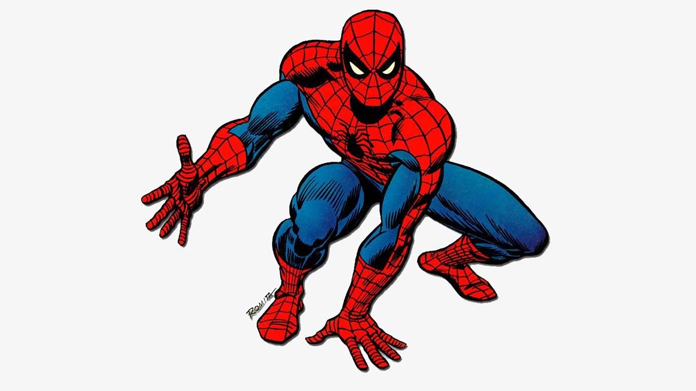

homem aranha
 Ambientada no Japão durante o Período Taishō (1912-1926), a história gira ao entorno de Tanjirō Kamado, um garoto bondoso e inteligente que vive junto com sua
mãe e seus irmãos, ganhando dinheiro vendendo carvão, assim como seu falecido pai. Certo dia, ao voltar para casa após ter ido a uma cidade vender carvão, Tanjiro
descobre que toda sua família foi atacada por onis, sendo que uma de suas irmãs, Nezuko, é a única que sobreviveu ao ataque. Nezuko então passa a ser um oni, mas
ela surpreendentemente ainda demonstra sinais de emoções e pensamentos humanos.Tanjirō decide então se tornar um caçador de onis, e com a ajuda de Nezuko, passa a
sair em jornadas pelo Japão a fim de impedir que a mesma tragédia que afetou sua família aconteça com outras pessoas, enquanto que ele busca uma maneira de
tornar Nezuko humana novamente.
O personagem principal de Demon Slayer, Tanjiro é o filho mais velho de uma família que foi massacrada por um demônio enquanto ele vendia carvão numa cidade.
Ele decide se tornar um caçador de demônios com o objetivo de encontrar uma cura para a irmã, única sobrevivente do massacre, e transformá-la de volta em uma
humana. Gentil e bondoso, Tanjiro vai passar cerca de dois anos com mestre Urokodaki, treinando o estilo de batalha "Respiração da Água" para se tornar
mais forte.